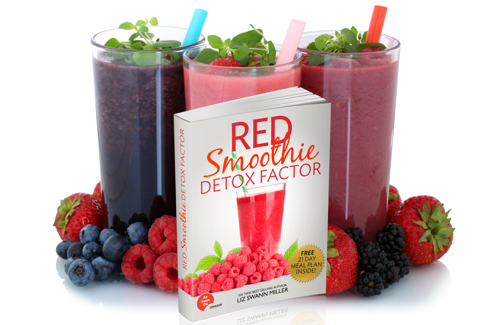
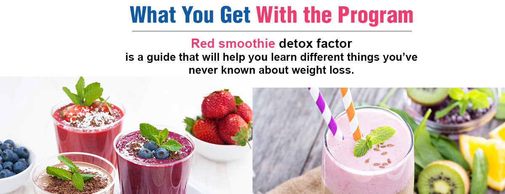
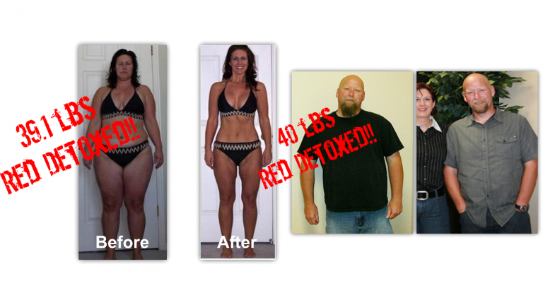

Red Smoothie Detox Factor | Liz Miller's Cleansing eBook - Does It Really Work?
What is Red Smoothie Detox Factor?
Red Smoothie Detox Factor is an online eBook that advertises the advantages of drinking “red smoothies” every day.
Basically, by drinking smoothies packed with red fruits (as well as some blue and purple fruits) you can enjoy some enormous health benefits – including weight loss and a reduced risk of various diseases.
At one point in the eBook, author Elizabeth Swann Miller says that “everyone raves about green smoothies these days – and for good reason”, but few people pay attention to red smoothies.
Already Decided?
That's great! Click the button on your right and take the action now.
The idea is that the ingredients in colorful fruits are packed with antioxidants. Those ingredients discharge toxins from the body, which then somehow helps your body release “stubborn pounds”.
In addition to containing antioxidants, red smoothies are packed with vitamins and minerals. These vitamins and minerals can boost your overall health while also increasing your concentration.
How Does Red Smoothie Detox Factor Work?
In its introductory video, Red Smoothie Detox Factor spins a fun story about how the ancient Incan civilization in Peru used to drink red smoothies to stay healthy.
That’s probably not true – or, at least, there’s no historic evidence they drank red smoothies. But it makes for a good story.
In any case, the creator of Red Smoothie Detox Factor claims that these ancient Incans relied on four critical ingredients, including:
Maca: A cancer-fighting plant found in the Andes Mountains of Bolivia and Peru. May balance the endocrine system and fight back against stress. Also used as an alternative to caffeine with minimal side effects. It also has a rich and mild, nutty flavor.
Vanilla: Vanilla adds flavor without spiking your insulin, described as your “fat storing hormone”. Its fragrance also may make you feel spiked and alert, according to the author.
Cocoa: “The ancient food of the Incan gods” is rich in health-enhancing phytonutrients like polyphenols, similar to the antioxidants found in red wine.
Chia: Elizabeth Swann Miller describes chia as a superfood where one cup has 4.9 grams of omega-3 fatty acids. There’s also 4 grams of protein and 17% of your daily calcium needs. They also had a creamy texture to smoothies.
By squeezing the extract from these ingredients and combining it with red, purple, and blue fruits, you can make a powerful red smoothie.
One popular red fruit discussed a lot in Red Smoothie Detox Factor is the raspberry, which is loaded with antioxidants and anthocyanins.
Of course, this diet isn’t just about drinking red smoothies. Your order also comes with an additional eBook where you can learn about green smoothies for weight loss.
There’s also a 14 day detox plan where you drink mostly red smoothies for 2 weeks to cleanse your body of toxins.
The ingredients also promise to be relatively inexpensive at any local grocery store. As the author explains, “If you want to buy a lot of expensive, hard-to-find ingredients and a pricy blender or juicer to make complicated recipes”, then this isn’t the diet plan for you.
Ultimately, the Red Smoothie Detox Factor is just a bunch of smoothie recipes delivered in an eBook form. That’s pretty much it.

Is Red Smoothie Detox Factor Expensive?
Red Smoothie Detox Factor is sold through Clickbank (an online retailer who specializes in these types of e-books) for $37, and can be downloaded immediately.
Money Saving Tip: If you try to click off the video’s home page, the system’s price will immediately drop to $19.
With your order, you’ll also receive a 21-day meal plan.
All purchases made through Clickbank come with a 60-day refund policy, which you can request by calling customer service at 800-390-6035.

Who Is Liz Swann Miller?
Liz Swann Miller holds degrees in psychology and naturopathy, and is the author of several books that deal with smoothies and juice cleansing. Most seem to come with fairly high ratings (4 stars and above), citing useful information and delicious recipes. On the other hand, several customers claimed that Liz’s book lacked much-needed detail and left them hanging.
And while this feedback seems positive, we think it’s a long way from making Liz “one of America’s leading experts on nutrition."
Outside of these however, we didn’t come across any online customer reviews specifically for Red Smoothie Detox Factor.
What Are You Waiting For?
Your Purchase is Backed Up by 30 Days Money Back Guarantee. If You Don't Like The Product, Give It Back And You Will Be Refunded With No Questions Asked!
Will Red Superfoods Help You Detox & Lose Weight?
Reviews or not, it’s important to mention that there’s no set definition for superfood. But in general, they’re “nutrient powerhouses that pack large doses of antioxidants, polyphenols, vitamins, and minerals. Eating them may reduce the risk of chronic disease, and prolong life, and people who eat more of them are healthier and thinner than those who don't.”
So, when the Red Smoothie Detox Factor video talks about red superfoods, they’re just referencing red-colored foods that have a lot of essential vitamins and minerals. So, as you might imagine, this is an extremely broad term and doesn’t tell us much about what you’ll be eating in the system.
But in general, there’s little clinical evidence directly linking red superfoods with weight loss. And as we’ve talked about on dozens of occasions, there’s also no clinical evidence showing that your body needs to be detoxed, either.
Granted, if you begin eating a lot of red superfoods as part of a balanced diet and healthy lifestyle, you might experience some weight loss. But there’s no clinical evidence showing that red superfoods are responsible.

Related Post
QUIT SMOKING MAGIC REVIEW
 Addiction/
Addiction/
ALCOHOL FREE FOREVER - HOW TO QUIT DRINKING TODAY FROM THE PRIVACY OF YOUR HOME

Recent Post
Bow Legs No More - Looking for a Permanent Remedy for Bow Legs Without the Need for Surgery?
 Denatal Health/
Denatal Health/
Dentist Be Damned How To Get Rid Of Toothache Review - Does It Really Work?
 Dental Health/
Dental Health/
Tooth Defender 100% Natural Oral Care Review - Does It Really Work?
 Beauty/
Beauty/
Skin Whitening Forever - How To Whiten Your Skin Naturally